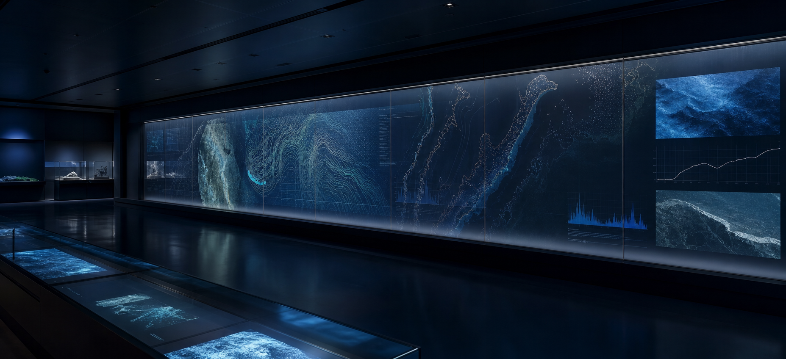

水圧観測
耐圧観測筒のセンサー値を5分間隔で保存します。異常値は点検履歴と合わせて確認します。

OBSERVATION
黒潮海底観測所では、水圧、潮流、低周波音、設備状態を継続して記録しています。速報値は研究利用向けに丸めて公開し、確定値は点検後に更新します。
耐圧観測筒のセンサー値を保存。
潮流計Cの平均と欠測を確認。
低周波音を地上管制室へ送信。
通信盤と観測線の状態を記録。
耐圧観測筒のセンサー値を5分間隔で保存します。異常値は点検履歴と合わせて確認します。
潮流計Cは、2014年11月18日の第三区画ログについて再確認履歴があります。
低周波音は海底ケーブル経由で地上管制室へ送られます。保守中は欠測扱いです。
DATA POLICY
観測値は、潮流条件、設備状態、通信遅延を確認したうえで確定します。過去値の訂正がある場合は、更新日と対象区画を併記します。